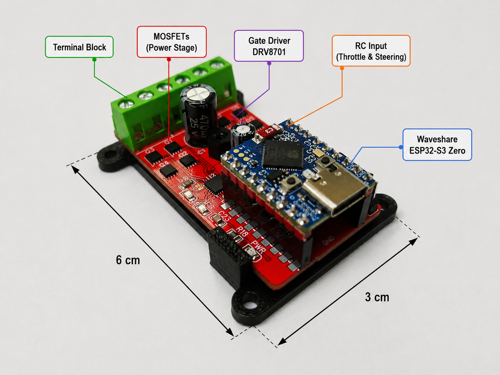
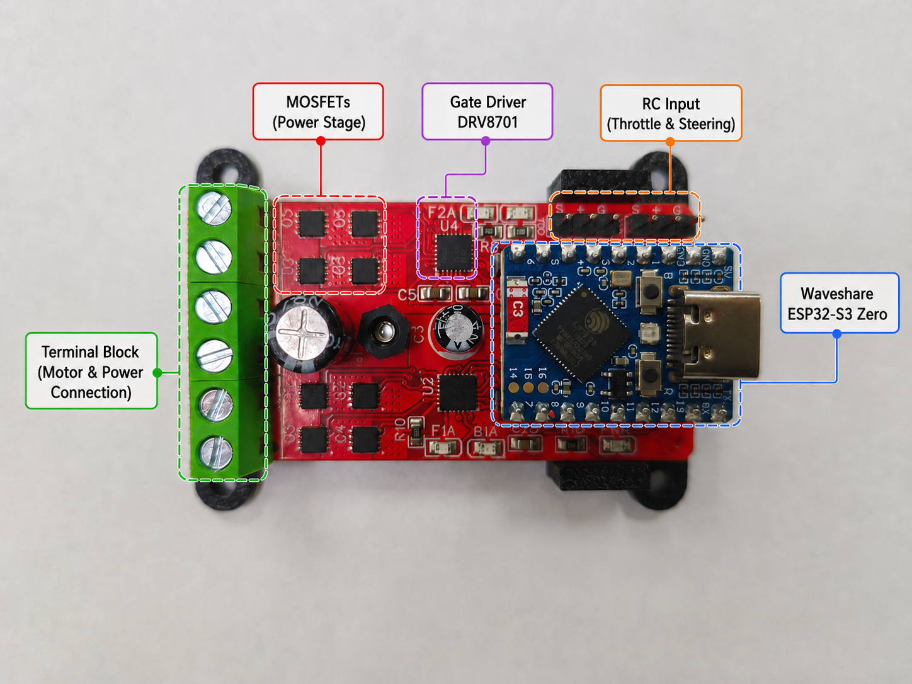
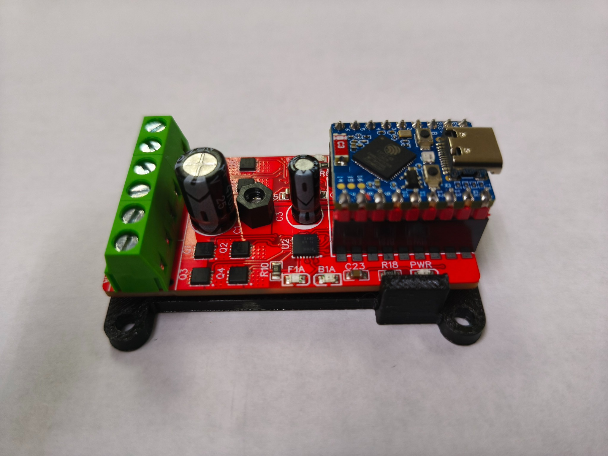
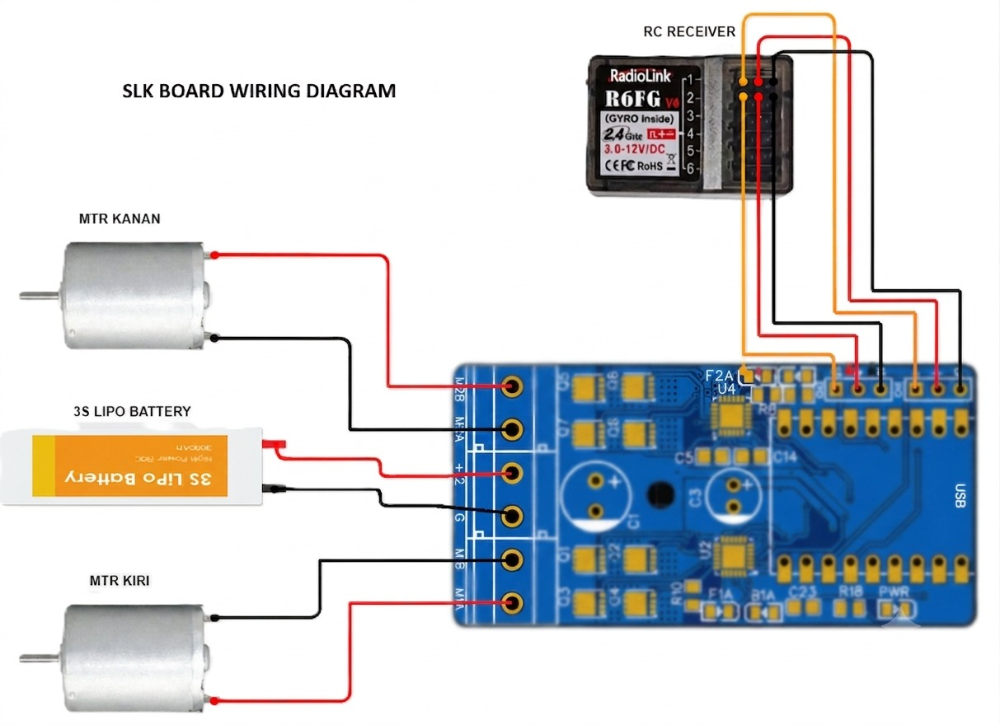

⌘
ESP32-S3 control
Uses the Waveshare ESP32-S3 Zero as the controller for your robot firmware and control input.
Meet the SLK Mini Sumo Board — a compact motor-control platform for mini sumo robots, embedded projects and hands-on robotics learning.

SLK Mini Sumo Board · Product photograph
A compact board designed to bring motor control and embedded programming together in one mini sumo robotics platform.
Uses the Waveshare ESP32-S3 Zero as the controller for your robot firmware and control input.
DRV8701 gate driver with external MOSFETs for driving the left and right DC motors.
Firmware options for RC receiver, Bluetooth mobile control and the TX X3 Bluetooth joystick.


| Product | SLK Mini Sumo Board |
|---|---|
| Controller | Waveshare ESP32-S3 Zero |
| Gate driver | DRV8701 |
| Power stage | External MOSFETs |
| Control inputs | RC receiver and Bluetooth firmware options |
| Board dimensions | 30 × 60 mm |
Continuous current, peak current and battery operating limits are not published here because the final rated values have not been confirmed for this website.
Choose the firmware or guide for your SLK Mini Sumo Board setup. Firmware files are supplied as Arduino IDE sketches.
Firmware intended for control using an RC transmitter and receiver. Filename indicates a 5 kHz PWM version.
Bluetooth firmware for mobile-phone control using analog-style inputs.
Bluetooth firmware for mobile-phone control using digital buttons.
Firmware for controlling the robot with the TX X3 joystick over Bluetooth.
Optional utility file associated with setting up the TX X3 joystick. Confirm its use before following it as a procedure.
Five-page guide covering Arduino IDE setup, ESP32 board configuration, compiling firmware and tuning robot movement.
Use the wiring diagram to identify the battery, motor and RC receiver connections before powering the board.
The supplied diagram shows a 3S LiPo battery, left and right DC motors, and a Radiolink R6FG receiver connection.
Download wiring diagram ↓
A space for robotics, electronics, hands-on development and resources related to the SLK Mini Sumo Board.
Explore the hardware and control options behind a compact mini sumo robot.
Use firmware and setup documentation to configure your controller and tune robot movement.
Download the files provided for the SLK Mini Sumo Board in one place.
Contact information can be added when you are ready to publish it.